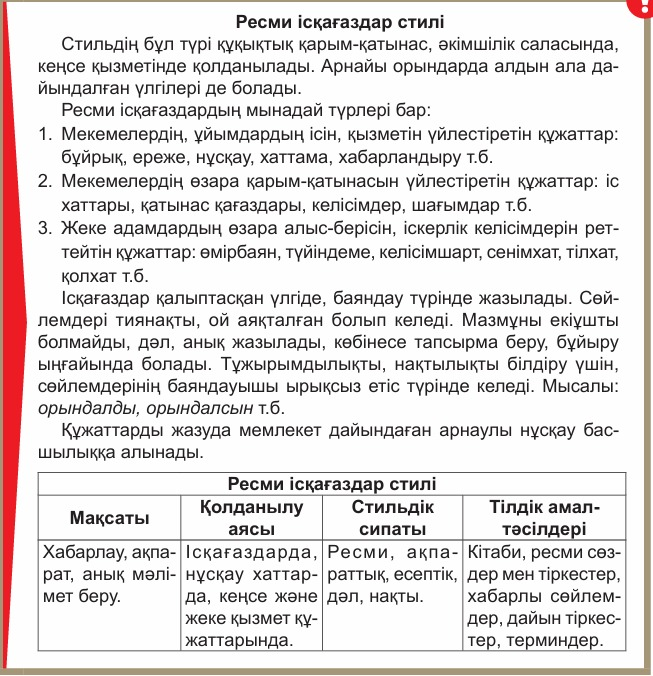
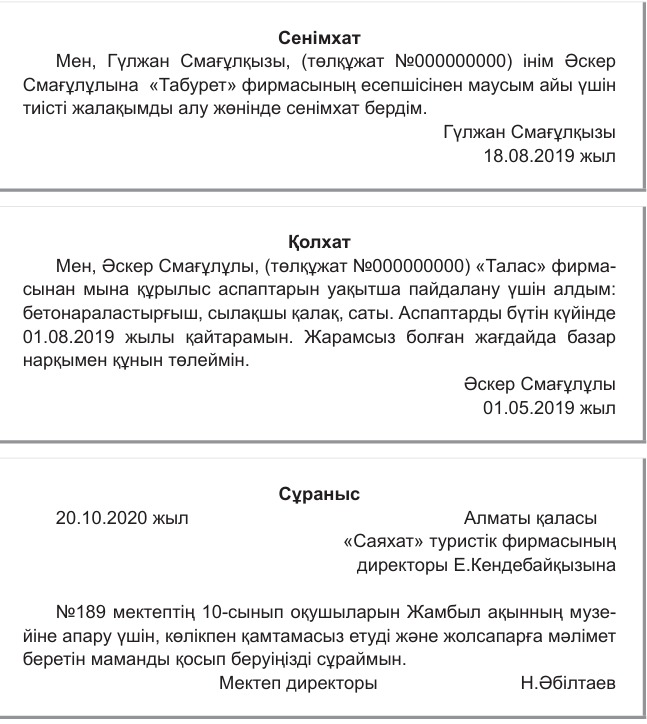

18-ТАПСЫРМА (СӨЖ № 18.1)
Іс-қағаздардың түрлері: Сенімхат, қолхат, сұраныс
I. Теориялық кешен (дәріс тезистері)
Мақсаты: Студенттерге іс-қағаздардың түрлерін (сенімхат, қолхат, сұраныс) таныстыру, олардың мазмұны мен құрылымдық ерекшеліктерін түсіндіру, дұрыс рәсімдеп жазу дағдыларын қалыптастыру.
Міндеттері: Іс-қағаз түрлерін ажырата білуге үйрету; құрылымын меңгерту; ресми стильде, грамматикалық сауатты жазу машығын дамыту; іс-қағаз үлгілерін жазу арқылы практикалық дағды қалыптастыру.
Бағалау критерийлері: Әртүрлі стильдегі (ғылыми, ресми іс-қағаздар стилі) мәтіндердің тақырыбын, мақсатты аудиторияға сәйкес қызметін, құрылымын, тілдік ерекшелігін салыстырады, талдайды.
Дәріс тезистері
1. Іс-қағаздар ұғымы және маңызы:
Іс-қағаздар – ұйымдар мен азаматтар арасындағы ресми қатынастарды реттейтін құжаттар. Олар құқықтық, ақпараттық, басқарушылық қызмет атқарады. Мемлекеттік тілде сауатты іс жүргізу – мекеме беделінің көрсеткіші.
Сенімхат
Анықтамасы: Белгілі бір адамға белгілі бір әрекеттерді орындауға заңды түрде рұқсат беретін құжат.
Мақсаты: Өкілдік ету құқығын беру (мысалы, құжат алу, келісімшарт жасау, көлік жүргізу).
Мазмұны: Құжат атауы, сенім білдіруші мен сенім білдірілген адамның мәліметтері, іс-әрекет сипаты, мерзімі, қолы. Нотариалды расталуы мүмкін.
Қолхат
Анықтамасы: Ақша немесе мүлік алған адам оны қайтаруға міндетті екенін жазбаша түрде растайтын құжат.
Мақсаты: Алынған заттың немесе соманың нақты дәлелі ретінде қызмет ету.
Мазмұны: Қолхат берушінің аты-жөні, алған заттың/ақшаның мөлшері, қайтару мерзімі, күні, қолы, куәгерлер болуы мүмкін.
Сұраныс
Анықтамасы: Белгілі бір ақпаратты, көмек немесе құжатты сұрап жазылатын ресми хат.
Мақсаты: Мекемеден қажетті дерек немесе іс-әрекет сұрау.
Мазмұны: Құжат атауы, жіберуші мен алушы мекеменің атауы, сұраныс себебі мен мазмұны, қолы, күні.
1-сурет: Ресми іс-қағаздары және ресми стиль
2-сурет: Сенімхат және қолхат үлгілері
Бақылау сұрақтары:
- Сенімхат құжаты қандай мақсатта жазылады және оның мазмұнында қандай мәліметтер болуы керек?
- Қолхат пен сенімхаттың айырмашылығы неде?
- Сұраныс хатының құрылымдық бөліктерін атаңыз.
- Іс-қағаздардың ресми стильде жазылуы неліктен маңызды?
- Сенімхат пен қолхатты рәсімдегенде қандай заңдық талаптарды ескеру керек?
Тапсырманы орындау бойынша нұсқаулық (орындау тәртібі):
- Мәтінді түсініп оқиды, мәтіннен түсінгенін айтады;
- Ережелерді оқып, есте сақтап алады;
- Сұрақтарға жауап береді.
Тапсырмадан күтілетін нәтиже: Берілген ақпаратты оқу, есте сақтап алу, сұрақтарға жауап беру.
Тапсыру формасы: Ауызша түрде.
Модуль / пән бойынша ұсынылатын әдебиеттер тізіміне сілтемелер: Okulyk.kz - Қазақ тілі оқулығы
II. Практикалық кешен (СӨЖ № 18.2)
1-тапсырма. Іс-қағаздарын рәсімдеу
Тапсырма: Берілген үлгілерді негізге алып, іс-қағаздардың бірнешеуін жазыңдар. Ережеде аталған іс-қағаздардың тағы қай түрінің жазылу үлгісін білесіңдер?
СЕНІМХАТ
Мен, Қостанай қаласының тұрғыны Серіков Асқар Серікұлы (ЖСН: 040512501234, жеке куәлік №123456789), осы сенімхат арқылы Нұрланов Дәурен Нұрланұлына (ЖСН: 030825604321) Қостанай Жоғары Политехникалық Колледжінен менің атыма келген диплом мен қосымшаны алуға сенім білдіремін.
Сенім білдіруші: ____________ Серіков А.С.
Күні: 2026 жылғы 18 қазан

3-сурет: Ресми сұраныс хаттары
2-тапсырма. Жеке құжаттарды дайындау
Тапсырма: Жеке адамдардың өзара алыс-берісін, іскерлік келісімдерін реттейтін құжаттардың жазылу үлгілерін еске түсіріңдер. Өтініш, түйіндеме, өмірбаян жазыңдар.
Қостанай Жоғары Политехникалық
колледжінің директорына
студент А.С. Серіковтен
ӨТІНІШ
Сізден денсаулық жағдайыма байланысты 2026 жылғы 19-21 қазан аралығында сабақтан босатуыңызды сұраймын. Дәрігер анықтамасы қоса беріледі.
Қолы: _________
Күні: 18.10.2026 ж.

4-сурет: Жеке іс-қағаздар: Түйіндеме, өмірбаян, өтініш
3-тапсырма. «РАФТ» стратегиясы бойынша интервью дайындау
Тапсырма: Ғылыми стильге тән тілдік құралдарды қолданып, «РАФТ» стратегиясымен Сыртқы істер министрлігі қызметкерінен зияткерлік миграция туралы алатын интервьюдің мәтінін дайындаңдар.
Үлгі:
– Сәлеметсіз бе! Сізден мамандар миграциясы туралы ақпарат алғымыз келеді. Қазіргі кезде қай мамандықтар сұранысқа ие болып отыр?
– Қайырлы күн! Бүгінде әлемнің барлық елі үшін зияткерлік миграция мәселесі өте өзекті. Жаһандық процестің субъектісі ретінде Қазақстан да аталған түйткілден тыс қала алмайды. Қазіргі таңда білімді жастарымыздың шетелге бет бұру процесі күн санап артуда…
Модуль / пән бойынша ұсынылатын әдебиеттер тізіміне сілтемелер: Okulyk.kz - Қазақ тілі оқулығы
III. Бағалау парағы
| № | Тапсырма | Дескрипторлар | Ұпай саны | Студенттің ұпай саны |
|---|---|---|---|---|
| 1 | Бақылау сұрақтары: |
• Мәтінді түсініп оқиды, түсінгенін айтады; • Сұрақтарға жауап береді. |
5 балл 5 балл |
|
| 2 | Іс-қағаздар үлгісін жазу және негізгі үрдістерді талдау |
• Мәтінді/ережені оқиды; • Сенімхат, қолхат, сұраныс жазады, үрдістерді көрсетеді. |
5 балл 20 балл |
|
| 3 | Өтініш, түйіндеме, өмірбаян жазу және пікір білдіру | • Өтініш, түйіндеме, өмірбаян жазады, өз ойын ортаға салынады. | 15 балл | |
| 4 | Түйген ойларды қорытындылау және ресми құжат жазу | • Түйген ойларын қорытындылап, ресми құжат мәтінін жазады. | 20 балл | |
| 5 | СИМ қызметкерінен «РАФТ» стратегиясы бойынша интервью дайындау |
• РАФТ стратегиясымен интервью мәтінін сауатты құрастырады; • Тілдік нормалар мен интонацияны ескеріп орындайды. |
10 балл 20 балл |
|
| Барлығы: | 100 балл | / 100 | ||